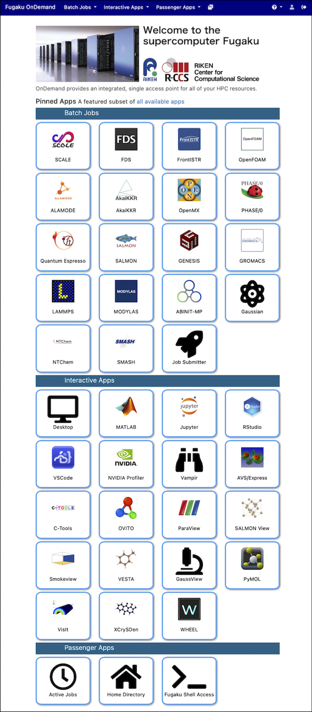
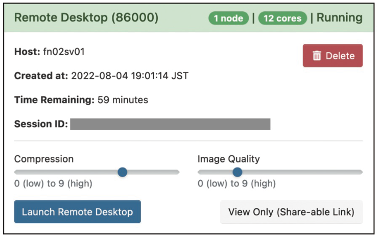
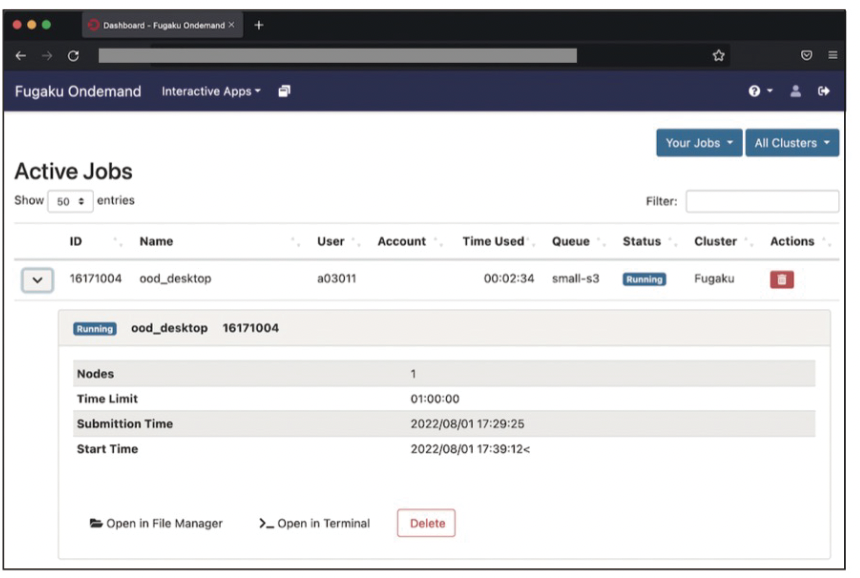
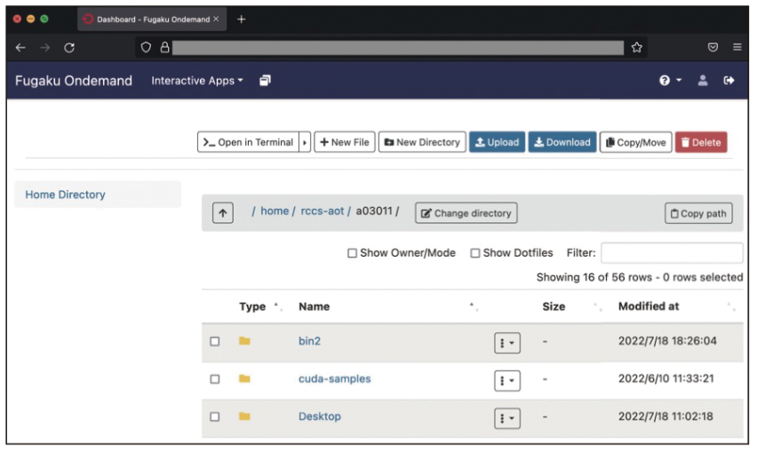
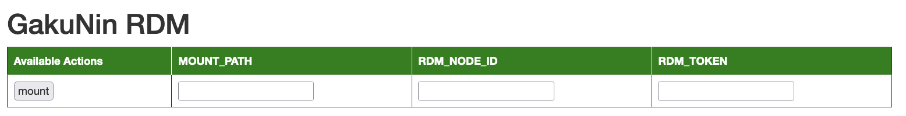
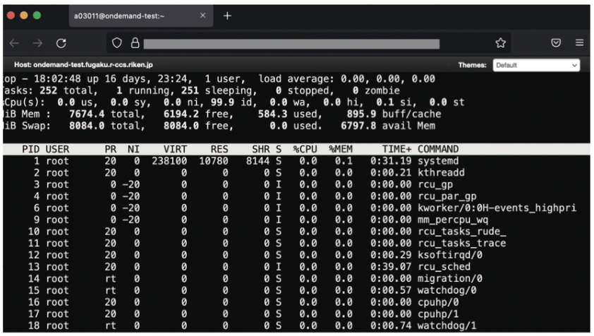

Open OnDemand is a web portal for using parallel computer systems via a web browser. The applications provided by Fugaku Open OnDemand are divided into the following three groups.

Click the icon to display a web form for entering computational resources. Input items differ for each application. Clicking Launch bottom will submit the job to Fugaku.
The web form is the same as Batch Jobs, but after clicking Launch the link to the application will be displayed when the job is launched on the compute node. By clicking on the link, you can use the corresponding application from your web browser.

You can view job information, and delete your jobs.

You can upload, download, delete, and edit files. The file size upload limit is 10GB.

File operations for cloud storage using rclone are also possible. You can set up rclone by starting Remote Desktop in Interactive Apps and running rclone or rclone-browser from the terminal. When you launch Home Directory afterwards, you can access the configured cloud storage. Please note that Fugaku Help Desk does not support rclone settings.
You can perform file operations on GakuNin RDM, a research data management platform provided by the National Institute of Informatics.

When clicking mount botton, a project directory in GakuNin RDM is mounted to Fugaku. When you want to unmount, please click unmount botton.
You can perform operations using a command line interface on your web browser.
